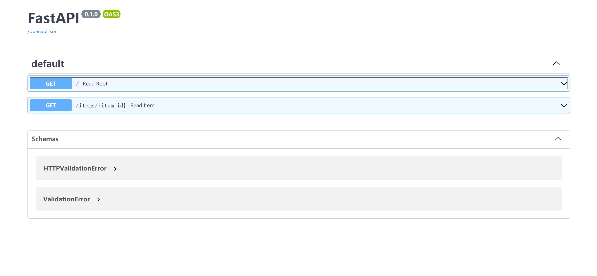
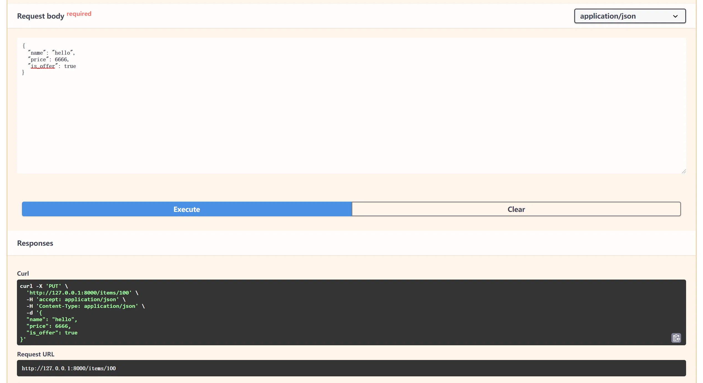

FastAPI安装和使用
本文最后更新于：2021年6月20日 下午
简介
FastAPI 是一个用于构建 API 的现代、快速（高性能）的 web 框架，使用 Python 3.6+ 并基于标准的 Python 类型提示。
关键特性:
快速：可与 NodeJS 和 Go 比肩的极高性能（归功于 Starlette 和 Pydantic）。最快的 Python web 框架之一。
高效编码：提高功能开发速度约 200％ 至 300％。*
更少 bug：减少约 40％ 的人为（开发者）导致错误。*
智能：极佳的编辑器支持。处处皆可自动补全，减少调试时间。
简单：设计的易于使用和学习，阅读文档的时间更短。
简短：使代码重复最小化。通过不同的参数声明实现丰富功能。bug 更少。
健壮：生产可用级别的代码。还有自动生成的交互式文档。
标准化：基于（并完全兼容）API 的相关开放标准：OpenAPI (以前被称为 Swagger) 和 JSON Schema。
依赖
Python 3.6及更高版本
FastAPI站在以下巨人的肩膀之上：
Starlette负责web部分。Pydantic负责数据部分。
安装
1 | |
你还会需要一个 ASGI 服务器，生产环境可以使用 Uvicorn 或者 Hypercorn。
1 | |
示例
创建
创建一个main.py文件并写入以下内容:
1 | |
如果你的代码里会出现 async / await，请使用 async def：
1 | |
运行
通过以下命令运行服务器：
1 | |
检查
使用浏览器访问http://127.0.0.1:8000/items/5?q=somequery。
你将会看到如下JSON响应：
1 | |
你已经创建了一个具有以下功能的 API：
- 通过 路径
/和/items/{item_id}接受HTTP请求。 - 以上 路径 都接受
GET操作（也被称为HTTP方法）。 /items/{item_id}路径 有一个路径参数item_id并且应该为int类型。/items/{item_id}路径 有一个可选的str类型的 查询参数q。
交互式 API 文档
访问http://127.0.0.1:8000/docs，你会看到自动生成的交互式 API 文档（由 Swagger UI生成）：

示例升级
现在修改main.py文件来从 PUT 请求中接收请求体。
我们借助 Pydantic 来使用标准的 Python 类型声明请求体。
1 | |
交互式 API 文档升级
交互式 API 文档将会自动更新，并加入新的请求体：
点击「Try it out」按钮，之后你可以填写参数并直接调用 API：
然后点击「Execute」按钮，用户界面将会和 API 进行通信，发送参数，获取结果并在屏幕上展示：

本博客所有文章除特别声明外，均采用 CC BY-SA 4.0 协议 ，转载请注明出处！